选区与抠图
认识选区
选区的基本功能
在 Photoshop 中处理图像时，经常需要针对局部效果进行调整，通过选择特定区域，可以对该区域进行编辑并保持未选定区域不会被改动。这时就需要为图像指定一个有效的编辑区域——选区。 若只需要改变卡片的颜色，就可以使用“磁性套索工具”或“钢笔工具”绘制出需要调色的区域选区，然后对这些区域进行单独调色即可。
选区的另外一项重要功能是图像局部的分离，也就是抠图。要将图中的主体物分离出来，就可以使用“快速选择工具”或“磁性套索工具”制作主体部分选区，接着将选区中的内容复制、粘贴到其他合适的背景文件中，并添加其他合成元素，即可完成一个合成作品。
制作选区常用方法
选区工具选择法
对于比较规则的圆形或方形对象，可以使用选框工具组。选框工具组是 Photoshop 中最常用的选区工具，适合于形状比较规则的图案（如圆形、椭圆形、正方形、长方形）。
对于不规则选区，则可以使用套索工具组。对于转折处比较强烈的图案，可以使用“多边形套索工具”来进行选择；对于转折比较柔和的图案，可以使用“套索工具”。
路径选择法
Photoshop 中的“钢笔工具”属于典型的矢量工具，通过“钢笔工具”可以绘制出平滑或者尖锐的任何形状路径，绘制完成后可以将其转换为相同形状的选区，从而选出对象。
色调选择法
“魔棒工具”、“快速选择工具”、“磁性套索工具”和“色彩范围”命令都可以基于色调之间的差异来创建选区。如果需要选择的对象与背景之间的色调差异比较明显，就可以使用这些工具和命令来进行选择。
通道选择法
通道抠图主要利用具体图像的色相差别或者明度差别用不同的方法建立选区。通道抠图法非常适合于半透明和毛发类对象选区的制作，如果要抠取毛发、婚纱、烟雾、玻璃以及具有运动模糊的物体，使用前面介绍的工具就很难保留精细的半透明选区，这时就需要使用通道来进行抠像。
通道抠图练习
快速蒙版选择法
在快速蒙版状态下，可以使用各种绘画工具和滤镜对选区进行细致的处理。比如，如果要将图中的前景对象抠选出来，就可以进入快速蒙版状态，然后使用“画笔工具”在快速蒙版中的背景部分上进行绘制（绘制出的选区为红色状态），绘制完成后按 Q 键退出快速蒙版状态，Photoshop 会自动创建选区，这时就可以删除背景，也可以为前景对象重新添加背景。
从当前图像创建蒙版
没有选区的状态下，在工具箱中单击“以快速蒙版模式编辑”按钮，接着使用绘画工具在快速蒙版状态下进行绘制，按 Q 键退出快速蒙版模式以后，红色以外的区域就会被选中。
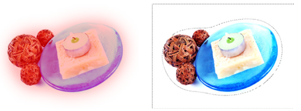
使用选框工具
矩形选框工具
矩形选框工具”主要用于创建矩形选区与正方形选区，在画面中按住鼠标左键并拖动，松开鼠标后即可得到选区。按住 Shift 键可以创建正方形选区。
椭圆选框工具
“椭圆选框工具”主要用来制作椭圆选区和正圆选区，按住 Shift 键可以创建正圆选区。
单行/单列选框工具
“单行选框工具”和“单列选框工具”主要用来创建高度或宽度为 1 像素的选区，常用来制作网格效果。这两种工具使用方法非常简单，在画面中单击即可得到选区。
选区的基本操作
移动选区
使用选框工具创建选区时，在松开鼠标左键之前，按住 Space 键（即空格键）拖拽光标，可以移动选区。
变换选区
- 首先使用“矩形选框工具”绘制一个长方形选区。对创建好的选区执行“选择>变换选区”命令或按
Alt+S+T组合键，可以对选区进行移动。 - 在选区变换状态下，在画布中右击，还可以选择其他变换方式。
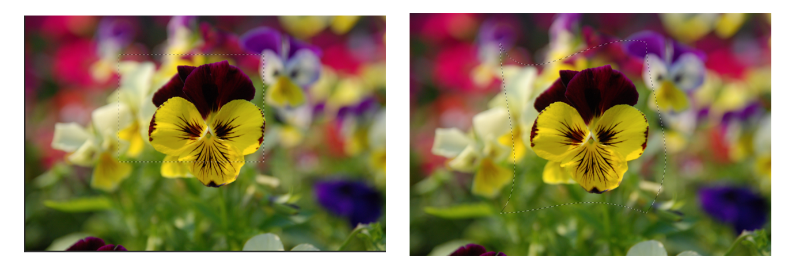
全选与反选
- 全选：全选图像常用于复制整个文档中的图像。执行“ 选 择 > 全 部 ” 命 令 或 按
Ctrl+A组合键，可以选择当前文档边界内的所有图像示。 - 反选：创建选区以后，执行“选择 > 反向选择”命令或按
Shift+Ctrl+I组合键，可以选择反相的选区，也就是选择图像中没有被选择的部分。
取消选择与重新选择
执行“选择 > 取消选择”命令或按 Ctrl+D 组合键，可以取消选区状态。
重新选择
如果要恢复被取消的选区，可以执行“选择 > 重新选择”命令示。
隐藏与显示选区
执行“视图 > 显示 > 选区边缘”命令可以切换选区的显示与隐藏。创建选区后，执行“视图 > 显示 > 选区边缘”命令或按 Ctrl+H 组合键，可以隐藏选区（注意，隐藏选区后，选区仍然存在）；如果要将隐藏的选区显示出来，可以再次执行“视图 > 显示 > 选区边缘”命令或按 Ctrl+H 组合键。
选区的运算
如果当前图像中包含选区，在使用任何选框工具、套索工具或魔棒工具创建选区时，选项栏中就会出现选区运算的相关工具。
- 打开图片文件，然后使用“矩形选框工具”绘制一个矩形选框，创建新选区。
- 在选项栏中单击“添加到选区”按钮，可以将当前创建的选区添加到原来的选区中（按住
Shift键也可以实现相同的操作）。
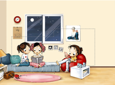
- 单击“从选区减去”按钮，可以将当前建选区从原来的选区中减去（按住
Alt键也可以实现相同的操作）。
- 单击“与选区交叉”按钮，新建选区时只保留原有选区与新建选区相交的部分（按住
Alt+Shift组合键也可以实现相同的操作）。
选区运算练习
存储选区
在 Photoshop 中，选区可以作为通道进行存储。执行“选择 > 存储选区”命令，或在“通道”面板中单击“将选区存储为通道”按钮，可以将选区存储为Alpha 通道蒙版。执行“选择 > 存储选区”命令，Photoshop 会弹出“存储选区”对话框。
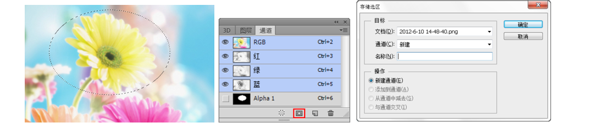
载入选区
执行“选择 > 载入选区”命令，或在“通道”面板中按住 Ctrl 键的同时单击存储选区的通道蒙版缩略图，即可重新载入存储起来的选区。当执行“选择 > 载入选区”命令时，Photoshop 会弹出“载入选区”对话框。
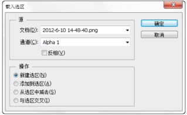
套索工具组
套索工具
使用“套索工具”可以非常自由地绘制出形状不规则的选区。选择 “套索工具”后，在图像上拖拽光标绘制选区边界，当释放鼠标时，选区将自动闭合。
多边形套索工具
“多边形套索工具”与“套索工具”的使用方法类似。“多边形套索工具”适合于创建一些转角比较强烈的选区。在画面中单击确定选区的起点，接着移动光标到其他位置再次单击，最后将光标定位到起点处，单击即可得到选区。
多边形套索练习
磁性套索工具
“磁性套索工具”能够以颜色上的差异自动识别对象的边界，特别适合于快速选择与背景对比强烈且边缘复杂的对象。使用“磁性套索工具”，在要选取的边界处单击，确定选区的起点，接着拖动光标，套索边界会自动对齐图像的边缘并绘制选区，最后将光标定位到选区起点处，单击即可得到选区。还可以按住 Alt 键切换到“多边形套索工具”，以勾选转角比较强烈的边缘。
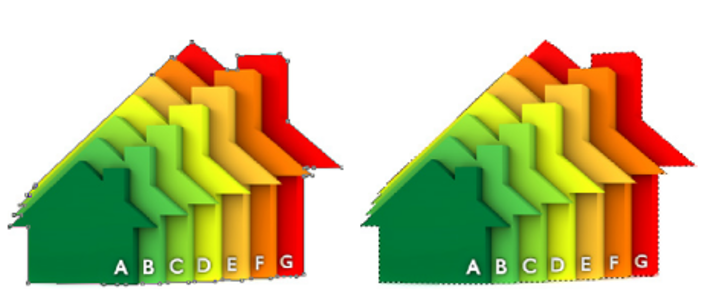
磁性套索练习
快速选择工具组
快速选择工具
使用“快速选择工具”可以利用可调整的圆形笔尖迅速地绘制出选区。使用该工具在需要选择的区域按住鼠标左键并拖拽，当拖拽笔尖时选取范围不但会向外扩张，而且还可以自动寻找并沿着图像的边缘来描绘选区。
魔棒工具
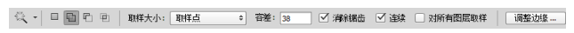
“魔棒工具”在实际工作中的使用频率相当高，使用“魔棒工具”在图像中单击就能选取颜色差别在容差值范围之内的区域。
魔棒工具练习
使用 “色彩范围”命令
“色彩范围”命令与“魔棒工具”相似，可根据图像的颜色范围创建选区，但是该命令提供了更多的控制选项，因此该命令的选择精度也要高一些。需要注意的是，“色彩范围”命令不可用于 32 位 / 通道的图像。执行“选择 > 色彩范围”命令，可以打开“色彩范围”对话框。
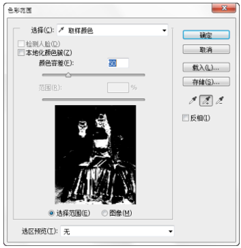
选区的编辑
创建边界选区
创建选区以后，执行“选择 > 修改 > 边界”命令，可以将选区的边界向内或向外进行扩展，扩展后的选区边界将与原来的选区边界形成新的选区。
平滑选区
对选区执行“选择 > 修改 > 平滑”命令，可以将选区进行平滑处理。
扩展选区
绘制选区，执行“选择 > 修改 > 扩展”命令，可以将选区向外进行扩展。
收缩选区
如果要向内收缩选区，可以执行“选择 > 修改 > 收缩”命令。
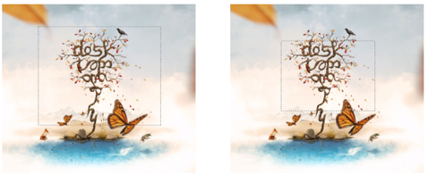
羽化选区
羽化选区是通过建立选区和选区周围像素之间的转换边界来模糊边缘，这种模糊方式将丢失选区边缘的一些细节。对选区执行“选择 > 修改 > 羽化”命令或按 Shift+F6 组合键，接着在弹出的“羽化选区”对话框中定义选区的“羽化半径”即可。
扩大选取
“扩大选取”命令是基于“魔棒工具”选项栏中指定的“容差”范围来决定选区的扩展范围。比如下图 中只选择了一部分粉色背景，执行“选择 > 扩大选取”命令后，Photoshop 会查找并选择那些与当前选区中像素色调相近的像素，从而扩大选择区域。
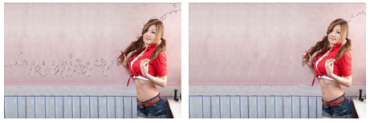
选取相似
“选取相似”命令与“扩大选取”命令相似，都是基于“魔棒工具”选项栏中指定的“容差”范围来决定选区的扩展范围。比如，下图中只选择了一部分粉色背景，执行“选择 > 选取相似”命令后，Photoshop 同样会查找并选择那些与当前选区中像素色调相近的像素，从而扩大选择区域。
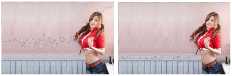
填充与描边
填充
利用“填充”命令可以在当前图层或选区内填充颜色或图案，同时也可以设置填充时的不透明度和混合模式。执行“编辑 > 填充”命令或按 Shift+F4 组合键，可以打开“填充”对话框。
描边选区
使用“描边”命令可以在选区、路径或图层周围创建彩色或者花纹的边框效果。创建出选区，然后执行“编辑 > 描边”命令或按 Alt+E+S组合键，打开“描边”对话框。
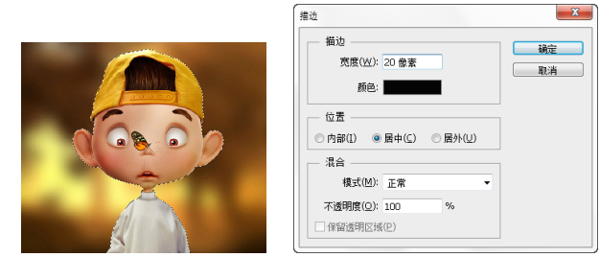